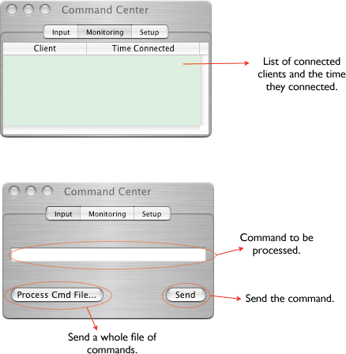
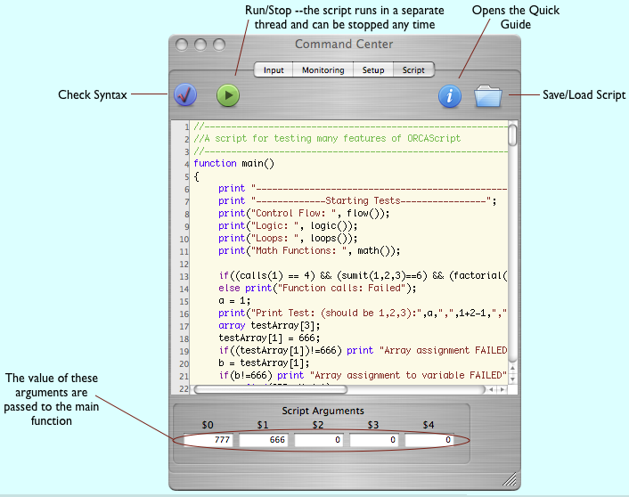

Remove clients can connect to ORCA via a BSD socket provided by the command center. Remote commands can do such things as start/stop runs, request status information, etc. The command center is opens from the main menu, Windows->Command Center. The setup dialog of the command center provides a port number for client to connect to, however in the current version of ORCA the port is hardcoded to be port 4667.
The format of the commands is a modified form of Obj-C method calls. For example, the command to start a run from a remote client is:
[RunControl remoteStartRun:123];
This would start run number 123. The internal ORCA run number is ignored when runs are started with this command. Simularly stopping the run would be:
[RunControl stopRun];
The commands can be any Obj-C method understood by the object, with the exception that the argments, if any, can not be pointers. The receiver of the command must either be the name of a registered object, such as RunControl or HeartBeat, or it can the general ID of a hardware object. For example, the command
[ORShaper,0,1 setThreshold:3 withValue:23];
would set the threshold for the shaper card in crate 0, slot 1. If the crate and card is left off,
[ORShaper setThreshold:3 withValue:23];
the channel 3 threshold of ALL shaper cards would be set. There is no way to set the values of all channels with one command at this time. To do that, use the Hardware Wizard.
Multiple commands can be sent as long as the ';' separates all commands. Also, a file full of commands can be sent from the dialog (see below). The input dialog is meant mainly to test suits of commands that a remote client might send.
Note that the commands descibed above are NOT OrcaScript commands.

OrcaScripts can be entered in the Scripting tab:
